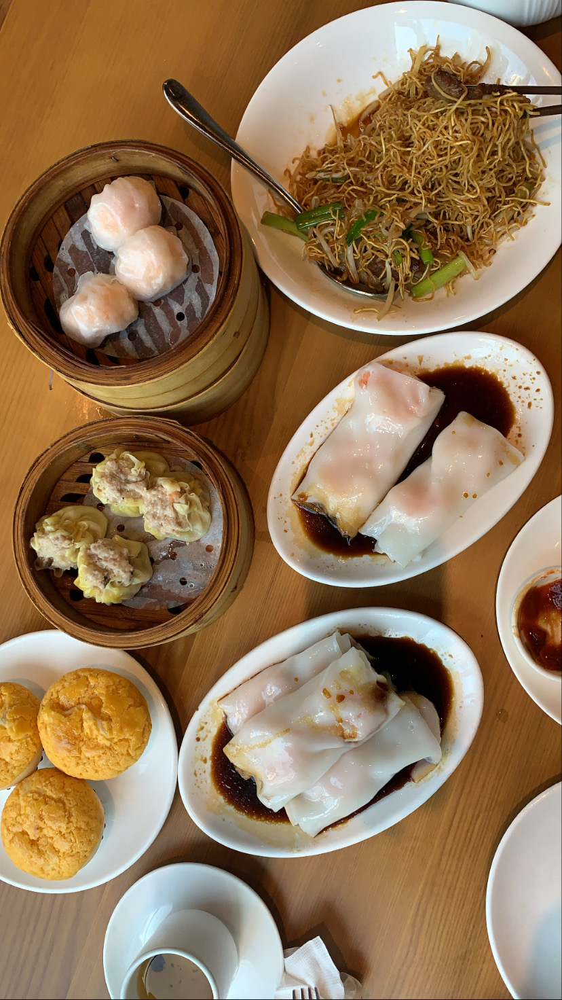
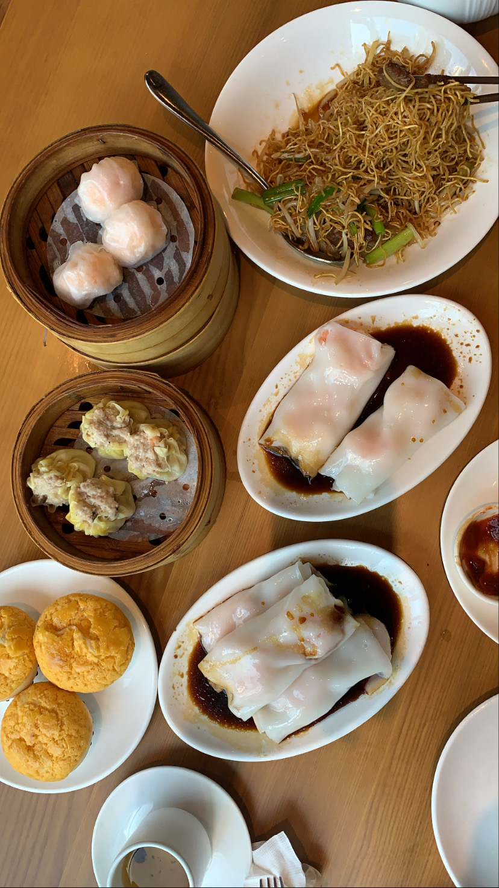
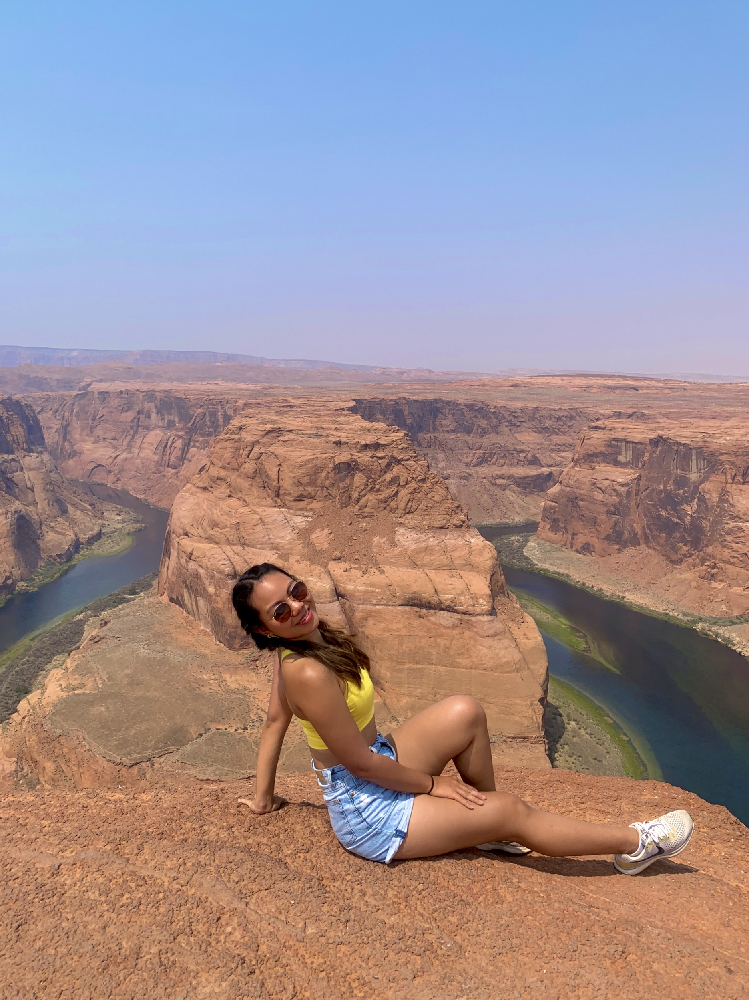
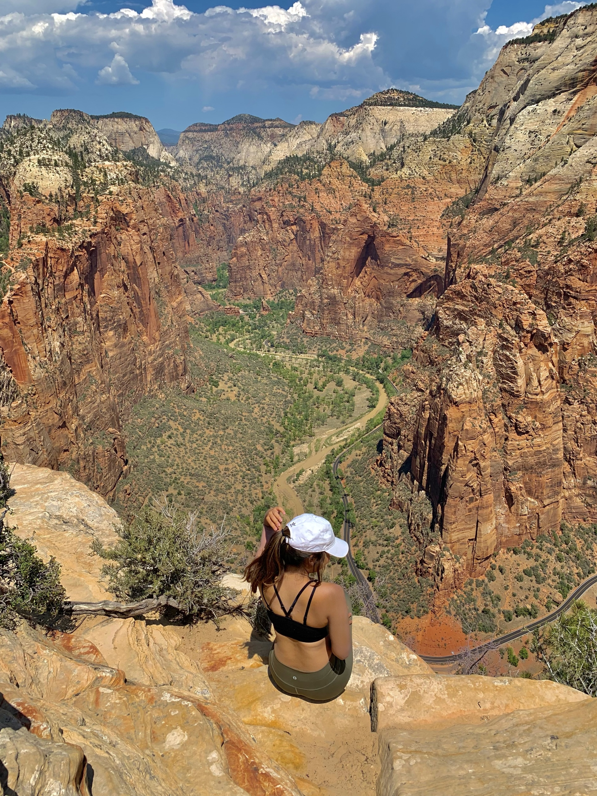
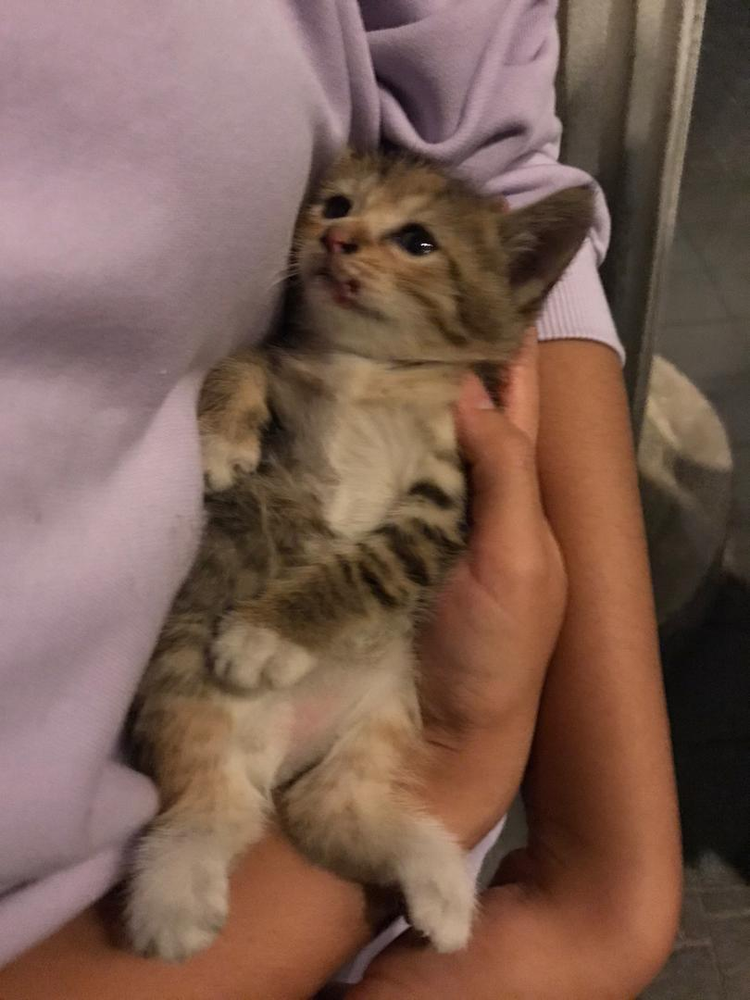
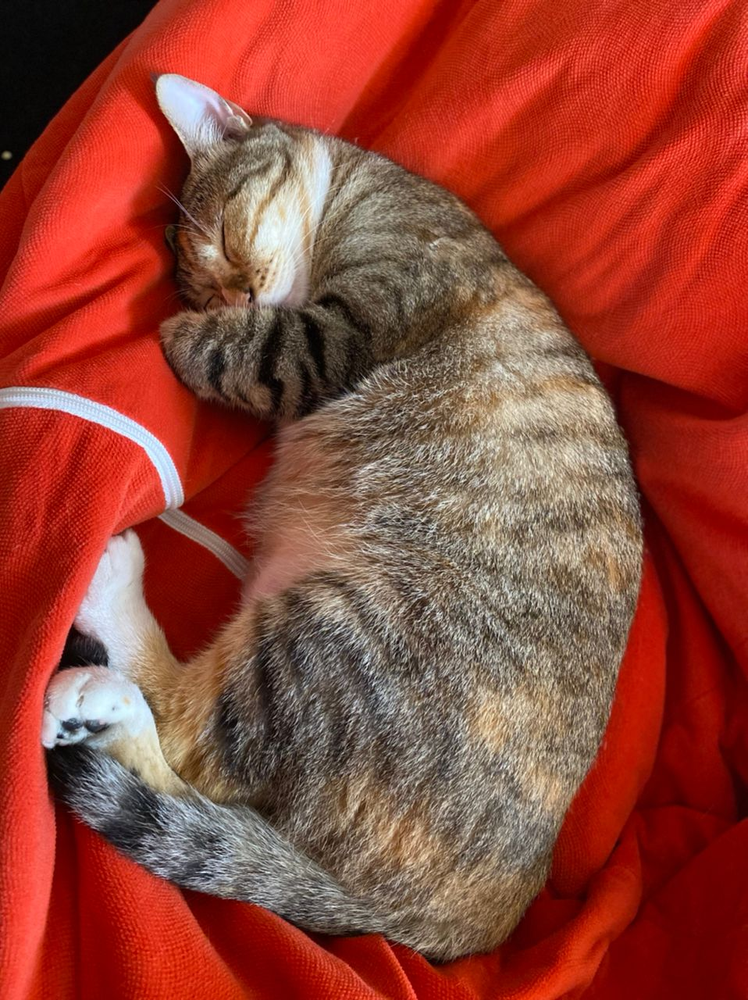
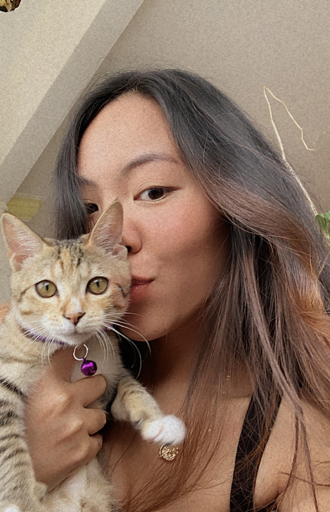
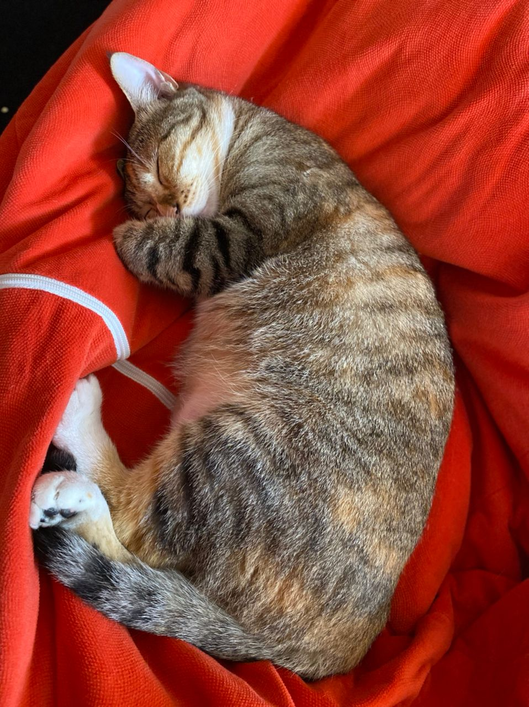
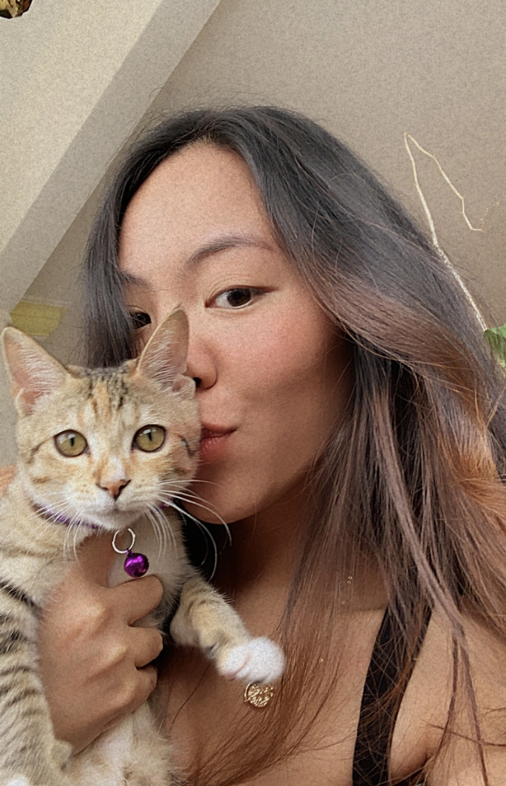

Hi there, I'm Mai!
My full name is Maisarah Diyanah Mahathir, but everyone calls me Mai. I am from Malaysia, but am currently residing in the US as I am a senior at the University of Michigan studying Psychology and User Experience. My hobbies include cooking/baking, reading, running, boxing and recently gaming! I started this website because I wanted a place where I could not only document my recipes and food that I enjoy, but also a place to run my small business, Mai Bakes! I first started Mai Bakes during the pandemic last year. I have always had a passion for baking, and quarantining during the pandemic gave me the time to explore my capabilities and strengths as a baker. I started making new things, experimenting new recipes and exploring different kinds of baked goods that I could potentially make. After a while, all I wanted to do was share what I was making with the community, in hopes of bringing light and joy amidst those dark times through my baked goods.
Education
I am currently about to graduate from the University of Michigan (UMich) with a Bachelor's degree in Psychology. Throughout my undergraduate career, I was mostly interested in the areas of organizational and developmental psychology. Having those interests, I pursued two internships where I did change management, one at PLUS Malaysia Berhad in the year 2019 and the other at the National Bank of Malaysia (BNM) in 2020. In both internships, I was involved in tasks such as data analysis, conducting interviews, conducting research and planning and developing change management plans for the company. However, my interests now lie on the intersection between psychology and tech, specifically in Human Computer Interaction (HCI) and User Experience (UX). In the year 2020, I got into the School of Information at UMich and started to take classes related to these two fields, immediately finding a passion for user research and designing user-centered systems/products that make our lives easier as humans. With that, I also have experience in web programming, usability testing, accessibility evaluation, conducting user interviews, and using UX software such as Figma and Adobe XD. My interest in HCI stemmed from my participation in a research project with Dr. Robin Brewer, a professor here at the university. For our research, we studied the different types of media content on the perceptions and attitudes towards dementia among college students. You can read the published paper linked in the 'My Projects' section of this page. As for my future plans, I intend to pursue a master's degree in HCI after working a few years in the UX team at PETRONAS, the national oil and gas company of Malaysia.
My projects
- ______
- ______
- ______
- ______
- ______
- ______
- ______
- ______
Travelling
Apart from my day-to-day hobbies, I also do a whole lot of travelling when I have the time. I have travelled to many different countries such as Hong Kong, Thailand, Indonesia, Australia, Mexico, New Zealand, UK, and of course the US. In the summer of 2021, I travelled to 13 different states within the US itself! I love and appreciate both nature and the city, so travelling anywhere and everywhere is good for me. However, I have to say that my favorite state in the US so far has been Colorado, as it has a little bit of everything. If I'm in need of some exposure to nature, I could go to the Rockies or the other national parks or waterfalls in Colorado. If I'm looking for a night out in the city, I could always go to Denver and spend time in one of their many aesthetically-pleasing bars. No matter what geography you want to surround yourself with, Colorado has it in abundance. Here are some snippets of a few of my travels:
Chicago
If I could live in any city in the US, it would definitely be Chicago. I don't know what it is about this city, but I love it so much. It's not too busy like New York but also not too quiet like Detroit, the food and restaurants there are amazing, and just the overall vibe. Oh and also, it's home to the best dim sum place in the US, MingHin! I think I've been to Chicago more than 5 times now, and I would happily go there again when I have the chance.

 



Colorado
As mentioned earlier, one of my favorite states in the US is definitely Colorado. I've been there twice, and got to experience different sides of the state. The first time I went there, I hiked at Rocky Mountain National Park and got to experience amazing views of nature in summer. The second time, I went to Glenwood Springs, which is the world's largest hotspring that had an amazing view of the moutains. That was during winter, so the mountains were covered in snow and were so pretty. I also travelled in Denver and loved the city. We went bar hopping and had good food throughout the whole trip.


National Park Trip (Utah, Arizona, Wyoming, Colorado etc)
In summer 2021, my girlfriends and I went for a national park trip where we got to visit a few national parks around the states. We went to the Rocky's, Zion National Park, Bryce Canyon National Park, Arches Naional Park, Grand Canyon, Grand Tetons and Yellowstone National Park. That trip was full of breathtaking views that I will remember for a lifetime.
 


My cat Koko
What is life without that furry friend of yours who gives you a reason to smile and be happy no matter what? Everyone meet the love of my life, Koko! How I met her is a very interesting story. One night, I was driving back from a friend's house when I saw an animal that looked like a rat on the road upfront. I was almost going to run over it (unintentionally of course), but then I realized it was not a rat, but a really small kitten who looked scared and lonely. She avoided my car and went to the side of the road, and I kept looking at her from my side mirror. I decided to stop the car, ran to where I last saw her, picked her up and took her home. She was bleeding around her nose and mouth, so I cleaned her up and gave her some milk. When I took her to the vet, they said that it was very unlikely that she will survive without her mother, but there is a possibility if she is fed well every 4 hours and is kept warm and feels loved. I later on found out that she even had a broken leg that started to swell up and caused her to limp when she walked. Even though the possibility of survival was minimal, I made the decision to take on the responsibility of caring for her. I spent hundreds on her food and medicine for her leg and her diarrhea problems, I woke up at night every 4 hours to feed her, I would give her warmth and attention 24/7, and I basically lived and breathed for her for the first two months taking care of her.

Now, Koko is happily living her life back at my house in Kuala Lumpur. Her leg has fully healed, she is more than healthy (as you can see from how big she is now), and lives a very luxurious life! She is loved by everyone in the house, including my grandparents. She loved to play with our other cat Princess who recently passed away. I haven't seen Koko in so long, and I can't wait for her to be back in my arms again.
 


